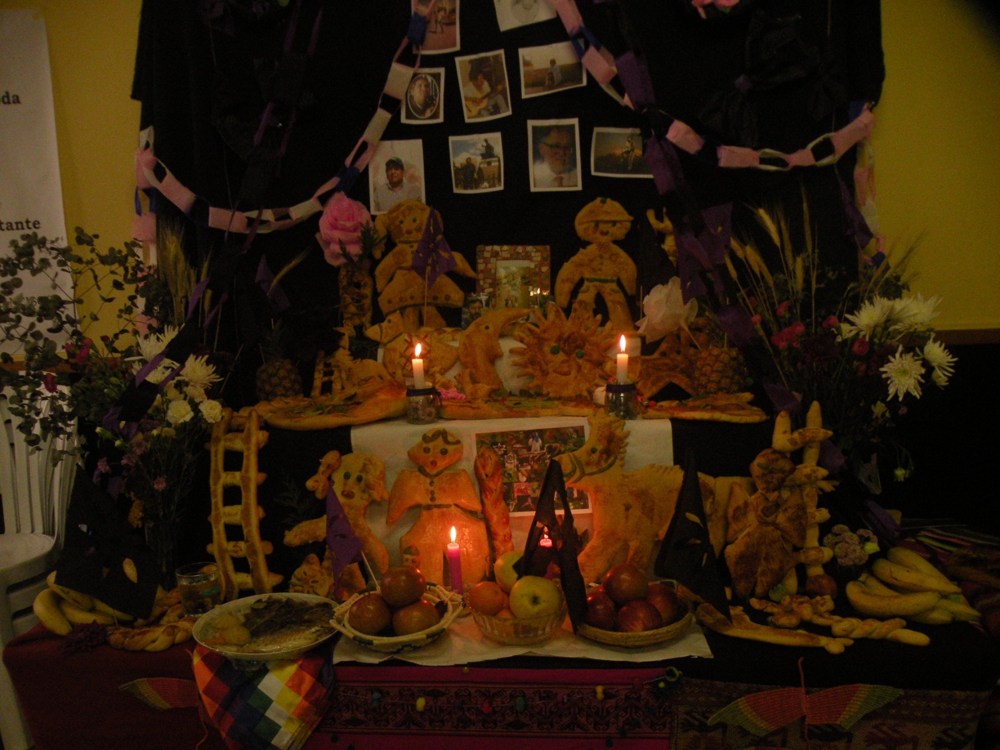
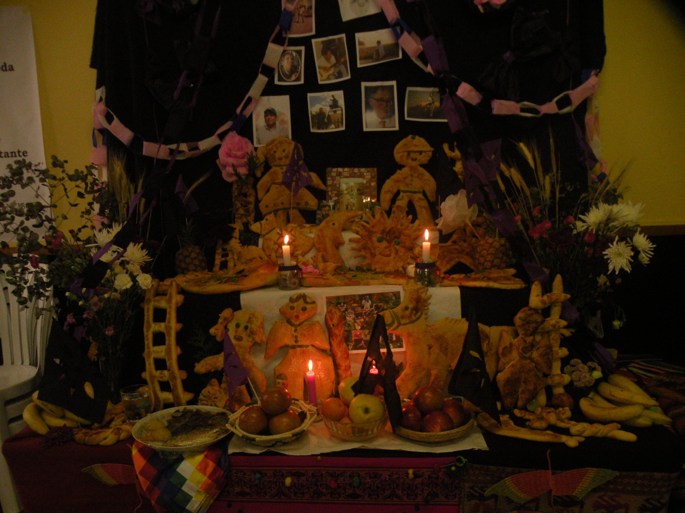
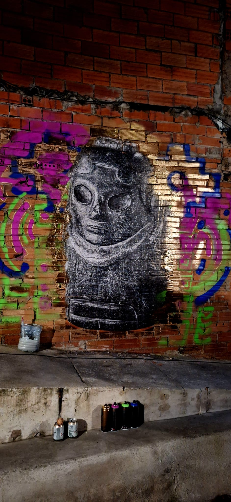
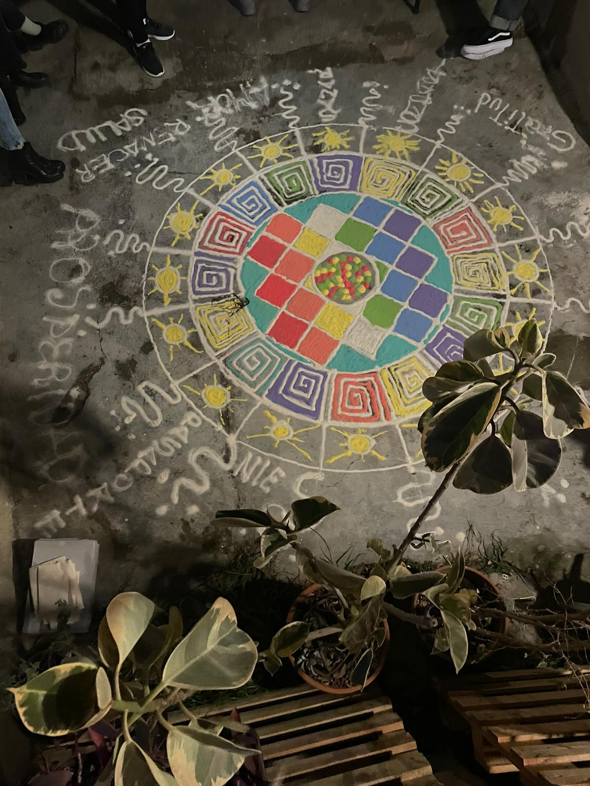
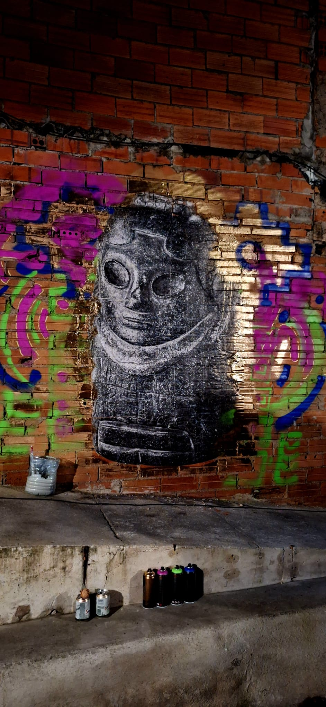
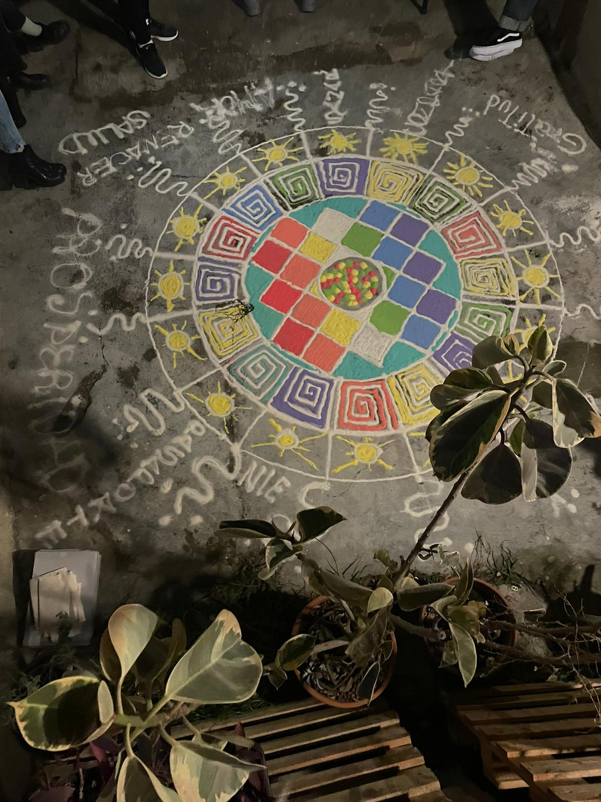

Todos santos

 

La celebarción de Todos Santos es una tradición que se remonta a siglos atrás, donde se honra y recuerda a los seres queridos que han partido. En nuestra asociación, organizamos actividades especiales para conmemorar esta fecha, y mostrar un poco la manera de festejar en distintos paises. En esta ocacion se mostro como se celebra en el pais de Bolivia
 


